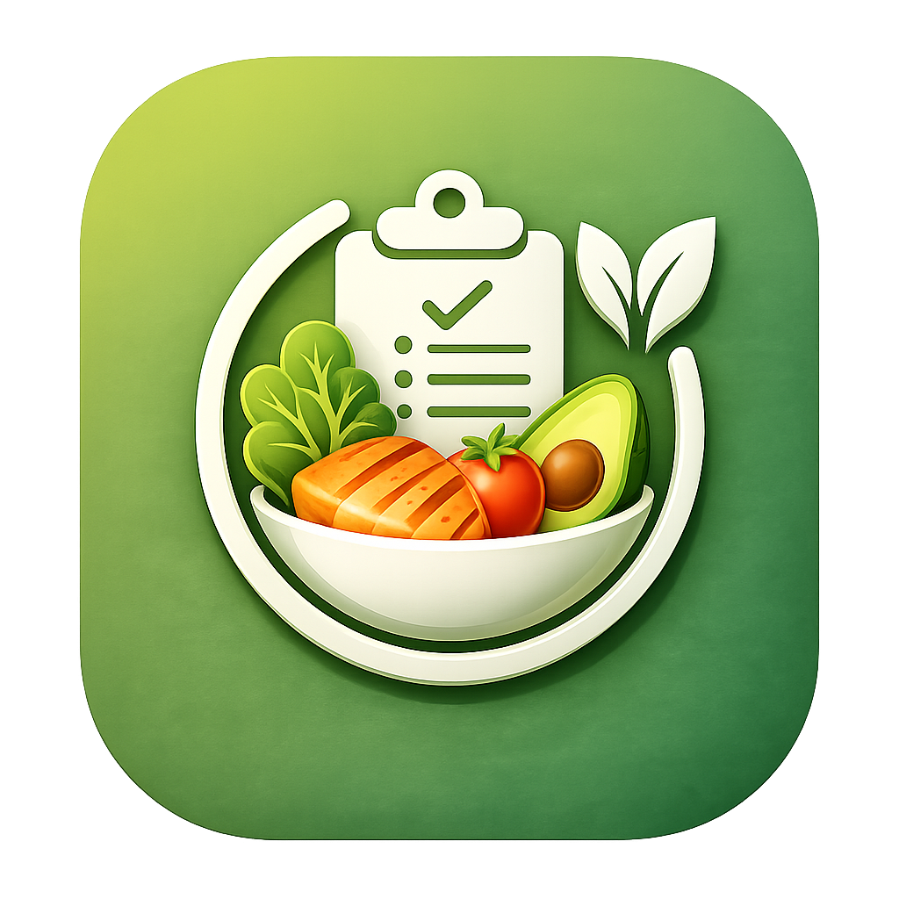

Crie seu perfil
Informe dados físicos, objetivo e nível de atividade para gerar metas diárias.

DietProGuideRegistre. Acompanhe. Evolua.
Seu guia nutricional inteligente para registrar refeições, acompanhar metas e evoluir com mais clareza todos os dias.
Como funciona
Configure seu perfil, receba metas personalizadas, registre alimentos e acompanhe sua evolução em uma interface clara, rápida e pensada para uso diário.
Informe dados físicos, objetivo e nível de atividade para gerar metas diárias.
Organize café da manhã, almoço, lanches, jantar, ceia e refeição livre.
Veja calorias, macros, hidratação, peso e conquistas em diferentes períodos.
Recursos principais
O DietProGuide reúne metas, registros, hidratação, scanner, lembretes e conquistas em um único aplicativo.
Calorias, proteínas, carboidratos, gorduras e água calculados com base no perfil.
Somas automáticas por refeição para entender o consumo do dia com clareza.
Acompanhe sua meta de água e adicione porções rápidas de 250 ml.
Salve alimentos recorrentes para reutilizar e acelerar os próximos registros.
Use OCR para transformar dados de rótulos em informações úteis no app.
Receba incentivos para manter hábitos e configure alertas da sua rotina.
Experiência do app
A navegação foi desenhada para que o acompanhamento alimentar pareça natural: poucos toques, cards claros e informações importantes sempre à vista.


Galeria

Itens, calorias e macros organizados por momento do dia.

Resumo visual por hoje, semana, mês e ano.

Dados físicos, objetivo, estatísticas e ajustes em um só lugar.

Alertas de água, refeições, pesagem e rotinas personalizadas.

Motivação extra para registrar, bater metas e manter consistência.

Uma experiência visual leve, verde e focada em saúde.
Scanner OCR
O recurso de OCR ajuda a capturar informações de rótulos para facilitar o cadastro e transformar dados nutricionais em registros úteis.
Consistência
Configure alertas para beber água, registrar refeições e acompanhar pesagens. Conforme você evolui, conquistas reforçam os hábitos que importam.
Dúvidas frequentes
Não. O DietProGuide é uma ferramenta de organização e acompanhamento. Ele não substitui orientação individual de um profissional de saúde ou nutrição.
Sim. O app calcula metas com base nos dados informados no perfil, como peso, altura, idade, sexo, nível de atividade e objetivo.
Sim. O app possui controle de hidratação diária com meta personalizada.
Sim. Há lembretes para água, refeições, pesagem e rotinas personalizadas.
Na versão atual, os dados são armazenados localmente no dispositivo. Em futuras versões, sincronização e backup podem ser adicionados.
Baixe o DietProGuide e leve suas metas nutricionais para uma rotina mais simples, visual e consistente.